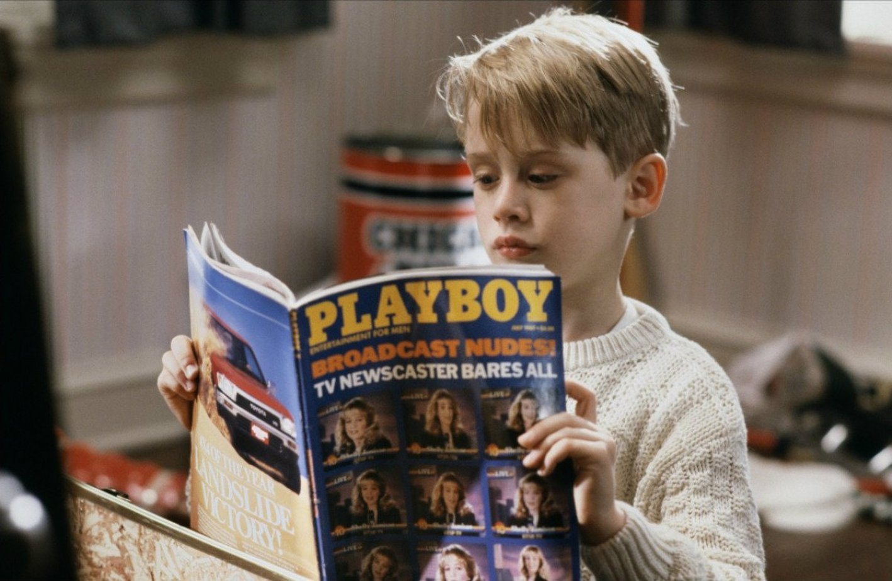

Один дома
Краткое содержание фильма
Американское семейство отправляется из Чикаго в Европу, но в спешке сборов бестолковые родители забывают дома... одного из своих детей. Юное создание, однако, не теряется и демонстрирует чудеса изобретательности. И когда в дом залезают грабители, им приходится не раз пожалеть о встрече с милым крошкой.
Кадры из фильма

О фильме
| Год |
2004 |
| Страна |
США |
| Жанр |
Комедия, семейный |
| Режиссер |
Крис Коламбус |
Гарри Поттер и философский камень
Краткое содержание фильма
Жизнь десятилетнего Гарри Поттера нельзя назвать сладкой: родители умерли, едва ему исполнился год, а от дяди и тёти, взявших сироту на воспитание, достаются лишь тычки да подзатыльники. Но в одиннадцатый день рождения Гарри всё меняется. Странный гость, неожиданно появившийся на пороге, приносит письмо, из которого мальчик узнаёт, что на самом деле он - волшебник и зачислен в школу магии под названием Хогвартс. А уже через пару недель Гарри будет мчаться в поезде Хогвартс-экспресс навстречу новой жизни, где его ждут невероятные приключения, верные друзья и самое главное — ключ к разгадке тайны смерти его родителей.
Кадры из фильма
О фильме
| Год |
2001 |
| Страна |
Великобритания, США |
| Жанр |
Фэнтези, приключения, семейный |
| Режиссер |
Крис Коламбус |